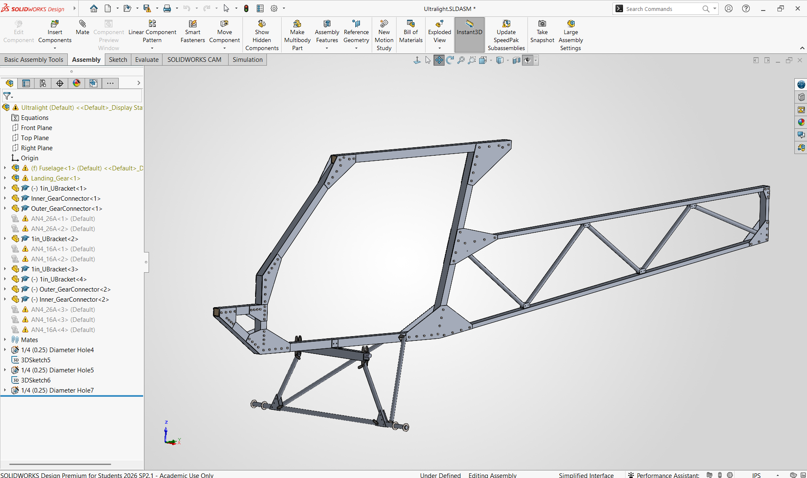

ENGINEERING · AEROSPACE
Ultralight
Fabrication

Turning pre-existing paper aircraft plans into a modern engineering workflow.
I'm working to transform plans for a Part 103 ultralight aircraft into detailed CAD models, making engineering changes where appropriate and using analysis to evaluate the resulting designs.
The project combines mechanical design, computational engineering, electronics, and software — including FEA, scale-model prototyping, custom avionics, and flight-data systems.
DEVELOPMENT PROCESS